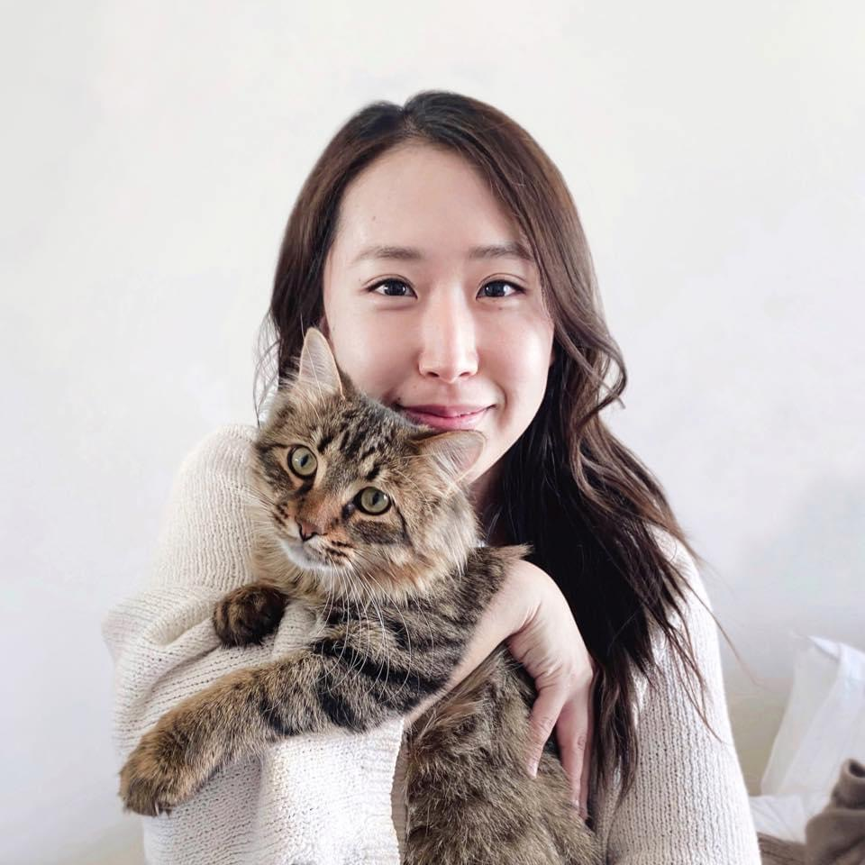
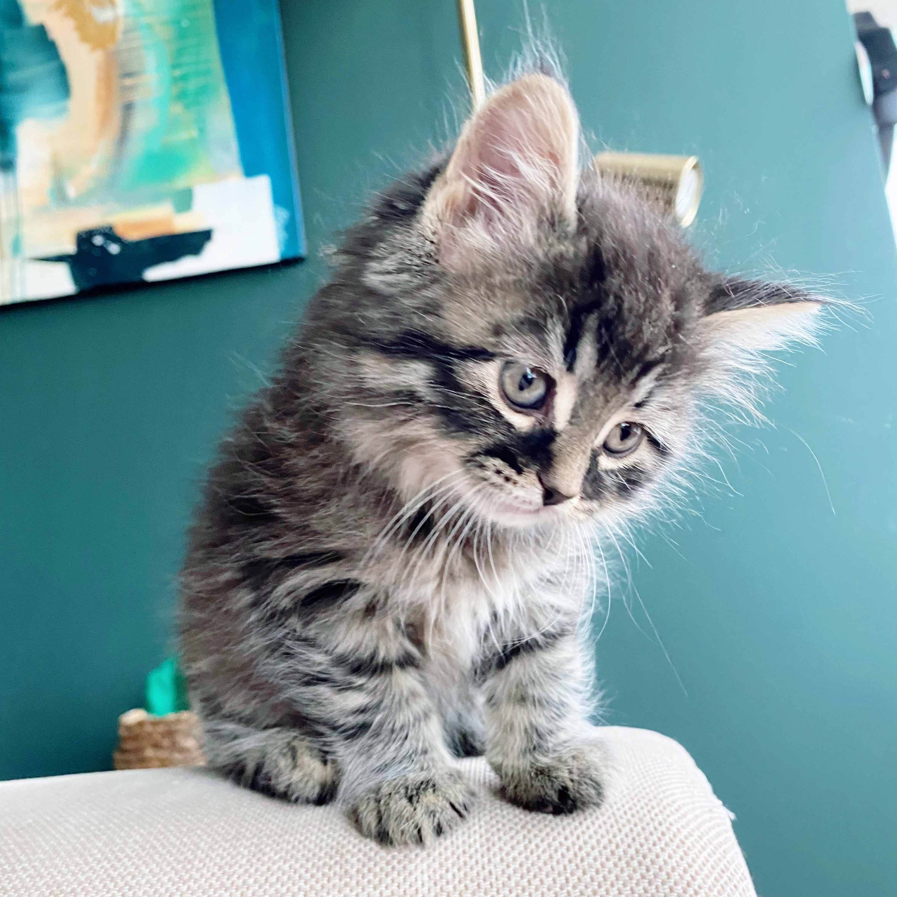

home research teaching contact art
Ai Taniguchi, PhD
Assistant Professor (Teaching Stream)
University of Toronto Mississauga
Department of Language Studies
she/her
Hi, I'm Ai. I'm a linguist specializing in formal semantics and formal
pragmatics. My research interests include dynamic semantics,
non-at-issue meaning, and social meaning. I did my PhD in Linguistics at Michigan State University, under the supervision of Marcin Morzycki. I am an Assistant Professor of English Language Linguistics and Online Teaching at the University of Toronto Mississauga. I was previously at Carleton University.
I am also an enthusiast of pedagogy in linguistics. My teaching
interests include incorporating technology in the classroom,
hybrid/online teaching, public outreach in linguistics, and
diversity/inclusion in the classroom.
Here's my CV. Papers, talk slides, and handouts can be found under the Research tab. Please see the Contact tab for my email, office phone number, office address, and office hour schedule.
I won the 5-Minute Linguist competition at the 2019 LSA Annual Meeting! Here are my slides! You can watch the video here!
this is me with my cat, Waffles. --> 
this is my other cat, Pancakes (recently adopted) --> 